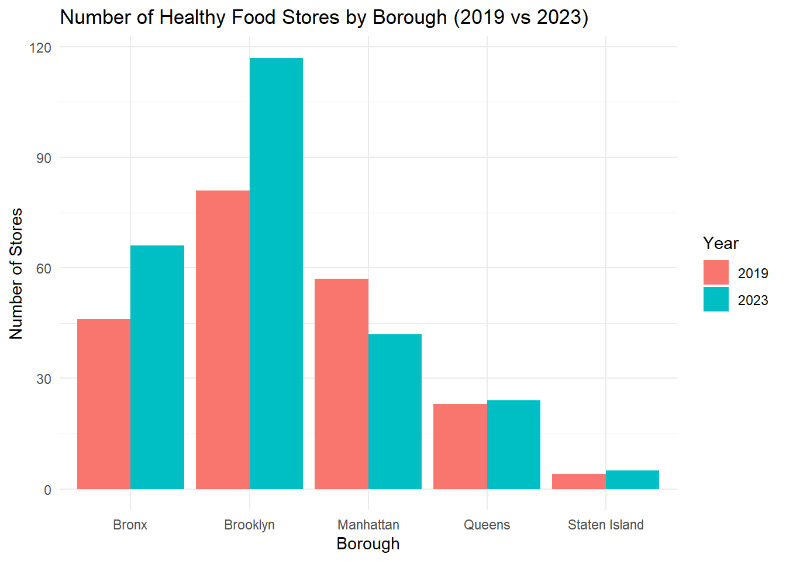

Since we had the data available, we were curious to analyze whether the pandemic had any impact on the number of healthy stores available to residents of each NYC Borough of interest. We selected 2019 as a pre-pandemic time point and 2023 as a “post-pandemic” time point.
Import healthy stores dataset stores_farmer_market for
the years 2019 and 2023 that are relevant for this question.
stores_farmers_market_years = read.csv("./data/stores_farmer_market.csv",
na = c("NA", ".")) %>%
filter(year %in% c(2019,2023))Count of the number of healthy stores per borough per year.
stores_by_year_borough =
stores_farmers_market_years %>%
group_by(year, borough) %>%
summarise(num_stores = n(), .groups = "drop")Pivot wider for t-test prep and so we can see a nice table with changes from 2019 to 2023.
stores_ttest_data =
stores_by_year_borough %>%
pivot_wider(names_from = year, values_from = num_stores, names_prefix = "year_") %>%
drop_na()
stores_ttest_data %>%
knitr::kable(
col.names = c("Borough", "2019", "2023"),
caption = "Number of Healthy Food Stores by Borough in 2019 and 2023"
)| Borough | 2019 | 2023 |
|---|---|---|
| Bronx | 46 | 66 |
| Brooklyn | 81 | 117 |
| Manhattan | 57 | 42 |
| Queens | 23 | 24 |
| Staten Island | 4 | 5 |
t-test
t_test_result =
t.test(stores_ttest_data$year_2019, stores_ttest_data$year_2023, paired = TRUE)
t_test_summary = broom::tidy(t_test_result)
t_test_summary %>%
mutate(
statistic = round(statistic, 3),
estimate = round(estimate, 3),
conf.low = round(conf.low, 3),
conf.high = round(conf.high, 3),
p.value = format.pval(p.value, digits = 3)
) %>%
knitr::kable(
caption = "Paired T-Test Results: Number of Healthy Food Stores (2019 vs 2023)"
)There is not a significant different between the number of healthy stores pre-pandemic in 2019 and the number of stores in 2023. p-value = 0.3844.
ggplot(stores_by_year_borough, aes(x = borough, y = num_stores, fill = as.factor(year))) +
geom_bar(stat = "identity", position = "dodge") +
labs(
title = "Number of Healthy Food Stores by Borough (2019 vs 2023)",
x = "Borough",
y = "Number of Stores",
fill = "Year"
) +
theme_minimal()
Though the overall change in number of stores by borough was not significant, we note that there was some increase in the number of stores in most boroughs (except Manhattan)